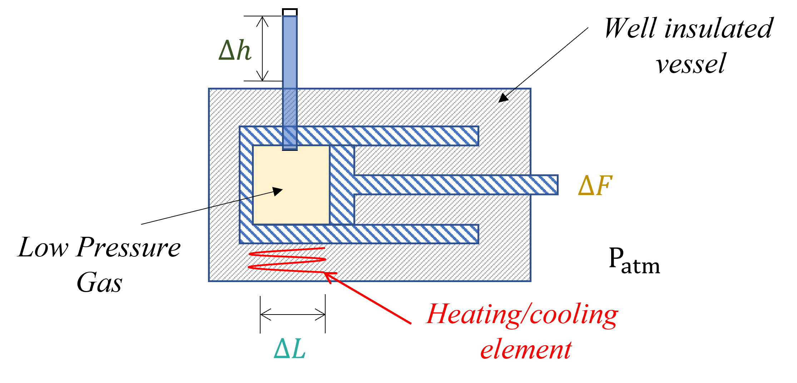

Thermodynamic Definitions#
Topics covered in this section include:
State Variables#
State variables are descriptors of the physical state of a system.
They come in two flavors:
Volumetric Variables
Thermal Variables
Volumetric Variables:#
Volumetric variables are state variables that we measure directly or control in the laboratory or physical plant. A major goal of thermodynamics is to recognize that for a given substance these variables are often not independent of one another. In other words, their magnitude is something that is determined by underlying thermodynamic relationshps that we will cover in this class.
Examples of Volumetric State Variables in this class - \(T, P, V, N, M, x_{i}, C_{i}\)
\(T\) is the temperature
\(P\) is the pressure
\(V\) is the volume
\(N\) is the number of moles
\(M\) is the mass
\(x_i\) is the mole fraction of species \(i\) in a mixture
\(C_i\) is the mass concentration of species \(i\) in a mixture
Thermal Variables:#
Thermal variables are state variables that govern the flow of heat, its use to perform work, and the direction of physical processes and how they evolve with time and towards equilibrium. These are variables that are often difficult to measure directly but manifest themselves through their influence on volumetric variables and the relationships between them.
Examples of Thermal State Variables in this class - \(H, U, S, G, A , \mathit{f}, \phi\)
\(H\) is the enthalpy
\(U\) is the internal energy
\(S\) is the entropy
\(G\) is the Gibbs free energy
\(A\) is the Helmholtz free energy
\(\mathit{f}\) is the fugacity
\(\phi\) is the fugacity coefficient
Gibbs’ Phase Rule:#
A system can be composed of an arbitrary number of phases (\(P\)) and components (\(C\)) and potentially include any number of chemical reactions (\(M\)). Additionally, these characteristics can change as a function of time. Gibbs observed that for systems in equilibrium, state variables could not be set independently from one another and there were constraints on how many variables could be specified.
We call the number of variables that we can control in a system, the number degrees of freedom (DOF).
Gibbs defined the number of degrees of freedom by phase rule is given as:
\(\quad DOF=2+C-P+M\)
Types of Equilibrium#
Thermal - Systems that are in thermal contact with each other over time will evolve so that their temperatures are equal (conduction of heat).
Mechanical - Systems that can exchange mass (ex., opening a pressurized cylinder) will evolve so that their pressures are equal.
Chemical - Systems that are undergoing chemical reactions will change the relative abundance of their species such that the rate of the forward reaction is equal to the rate of the reverse reaction.
Extensive and Intensive Variables#
Distinguishing intensive and extensive variables is an important topic in this class as many properties that we seek to measure or determine are dependent on how much of a material is present within a system of interest.
Let’s consider some variable \(\theta\). \(\theta\) is called an extensive variable if the magnitude of \(\theta\) depends on the total amount of material present. We can keep track of the total amount of material present by defining the total mass of that material \(M\) or the total number of a moles of that material \(N\).
We can eliminate the extensive nature of the variable \(\theta\) by dividing its extensive value by the mass or the total number of moles; such variables, we call intensive. In this book, we distinguish extensive from intensive variables with accents.
\(\quad \hat{\theta}=\dfrac{\theta}{M}\) where \(\hat{\theta}\) indicates that the normalization is performed based on the total mass
\(\quad \underline{\theta}=\dfrac{\theta}{N}\) where \(\underline{\theta}\) indicates that the normalization is performed based on the total number of moles.
Why do we make this distinction?:#
Extensive variables are often found in our macroscopic system balance expressions and are useful for calculating things like the total work done or the total amount of heat evolved in a process.
Intensive variables are often found in equations of state and are useful for relating thermodynamic quantities to one another and often make the expressions more compact and easier to read.
Working with Units#
Below is a list of the 7 fundamental units that are used in the International Standard (SI) systems of measurement to define the magnitude of measured quantities.
| SI base units | ||
| Symbol | Name | Quantity |
| s | second | time |
| m | metre | length |
| kg | kilogram | mass |
| A | ampere | electric current |
| K | kelvin | thermodynamic temperature |
| mol | mole | amount of substance |
| cd | candela | luminous intensity |
| SI defining constants | ||
| Symbol | Name | Exact value |
| ΔνCs | hyperfine transition frequency of Cs | 9192631770 Hz |
| c | speed of light | 299792458 m/s |
| h | Planck constant | 6.62607015×10−34 J⋅s |
| e | elementary charge | 1.602176634×10−19 C |
| k | Boltzmann constant | 1.380649×10−23 J/K |
| NA | Avogadro constant | 6.02214076×1023 mol−1 |
| Kcd | luminous efficacy of 540 THz radiation | 683 lm/W |
Examples#
\(\quad\quad R\) molar equivalent of Boltzmann’s constant \(R=k_B N_A=8.314\) \(\bigg[\dfrac{J}{mol\cdot K}\bigg]\)
\(\quad\quad P=\frac{Force}{Area}=\frac{Mass\:\times Acceleration\:}{Area}=\frac{kg\cdot m}{m^2\cdot s^2}=\frac{kg}{m\cdot s^2}=Pa\)
\(\quad\quad W=\int_C\textbf{F}ds=Force\:\times Distance=\frac{kg\cdot m\cdot m}{s^2}=\frac{kg\cdot m^2}{s^2}\)
\(\quad\quad V=Distance^3=m^3\)
Energy \(\quad\quad E=Force\:\times Distance=\frac{kg\cdot m\cdot m}{s^2}=\frac{kg\cdot m^2}{s^2}\)
Energy has the same units as work. Examples of energy, \(E\), include:
Potential Energy, \(PE\)
Kinetic Energy, \(KE\)
Work, \(W\)
Heat, \(Q\)
Entropy \(\int S dT\), where \(S\) is the entropy and \(T\) the temperature. A change in entropy or temperature corresponds to a change in energy.
The Piston - An Illustrative Example#

Understanding the Relationship between Thermal and Volumetric Variables#
We often think about property changes in the context of initial and final states. Some action/process drives a system to change resulting in a change in measurable properties (Both volumetric and thermal). Because of the Gibb’s Phase Rule, the change in volumetric and thermal variables are strongly interrelated and in some cases not intuitively connected.
Using the cylinder example above, consider the following scenario:
Heat is added to the piston (i.e., \(Q > 0\)) containing a constant number of moles \(N\) of gas while \(L\) (and \(V\)) remains constant. What happens within the piston to the temperature and pressure? What about the energy content of the fluid w/in the piston?
Work is extracted from the piston (i.e., \(W<0\)) containing a constant number of moles \(N\) of gas while \(L\) remains constant. If the piston is well-insulated, what happens within the piston to the temperature and pressure? What about the energy content of the fluid w/in the piston?
An elective vehicle battery is charged resulting in modest temperature and enormous pressure increases within the battery cells held at constant volume. What has happened to the energy content of the battery and what was necessary for this transformation to take place?
During periods of excess solar electricity generation, work \(W\) is done to elevate enormous concrete blocks in the air. While the temperature and pressure of the blocks remains relatively unchanged, their energy content has changed dramatically. In what way and how might this be useful? What if we changed from concrete blocks to water?
Water stored in a hydroelectric dam is at constant pressure and temperature. Allowing this water to flow downhill through a turbine generates useful work, \(W\). How?